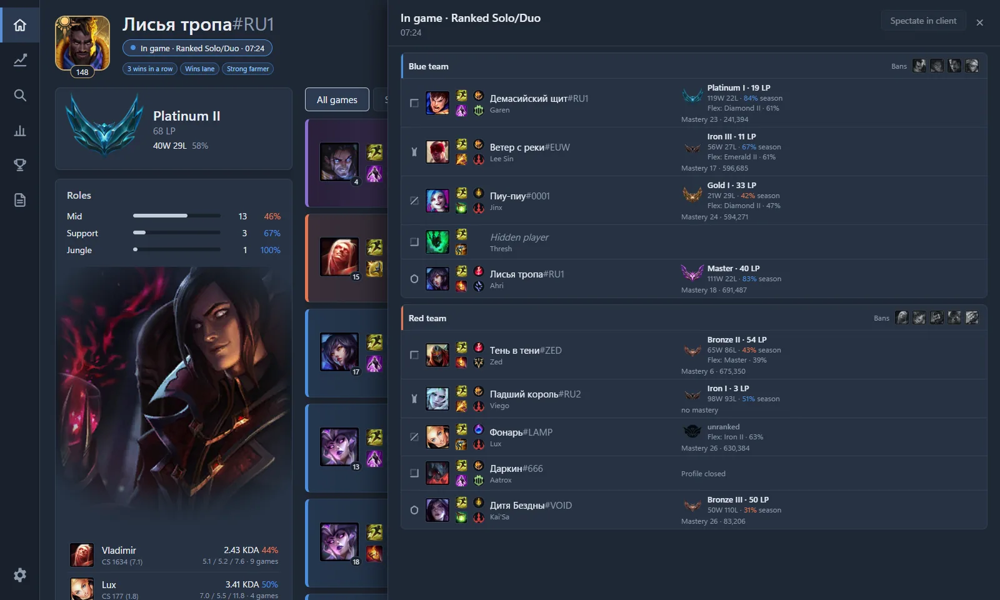
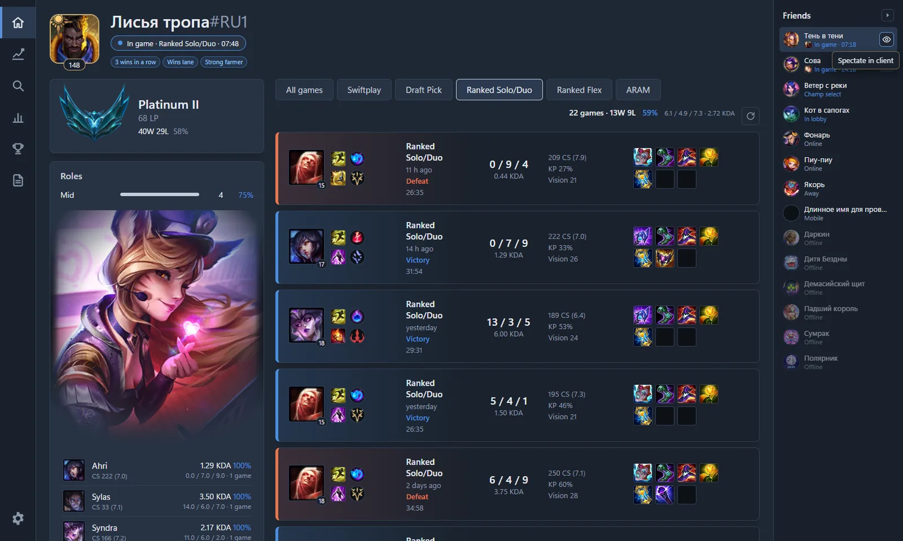
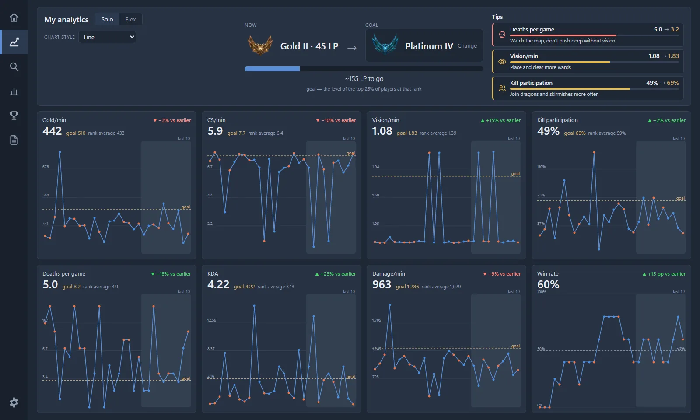
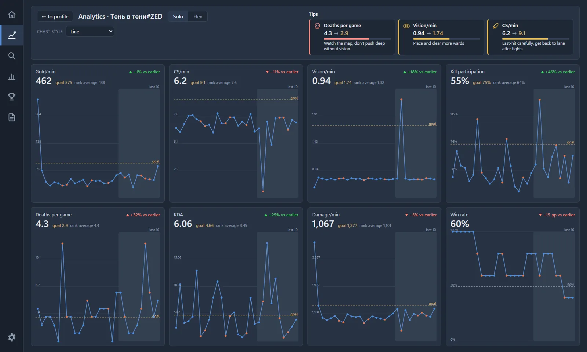
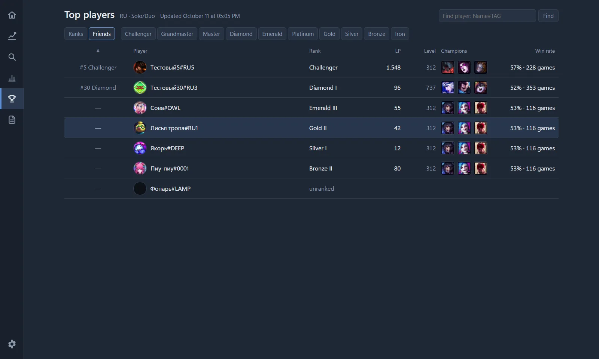

Sintence is a free League of Legends (LoL) companion app for Windows. In champion select it suggests builds, runes and skill order and shows the ranks of lobby players; in a match it shows live stats above the game. It also has the champion meta of the current patch and the top players of the RU server.
A desktop app for Windows with an overlay for League of Legends: a live match scoreboard, lobby player profiles, build advice for your champion and your match history.
Screenshots














Features
Live match scoreboard
An overlay window above the game with the scoreboard of the current match. Data comes from the official Live Client Data API that the game provides locally — only what the player can already see in the game.
Lobby player profiles
Rank, champion mastery and a play-style summary based on each player’s past matches, via the Riot Games API.
Build advice for your champion
Runes, summoner spells, items and skill order for your champion, based on statistics of ranked matches.
Runes and spells applied only on click
A suggested rune page and summoner spells are sent to the League client only when the player clicks the button. Nothing is changed automatically.
Match history
Your recent matches with details.
In-match stats window
An optional small window during a match: your minions, gold, vision, kill participation and level compared with average players of your rank and role at the same minute.
Current game of any player
Both teams with roles, bans, summoner spells, keystone runes, rank and mastery.
Friends
Friends from the League client with their statuses; a friend’s current game can be opened in Sintence.
Watch in the client
A friend’s game can be watched in the League client.
My analytics
A rank goal, charts over your recent ranked games and tips.
Player analytics
Analytics of any player compared with the top 25% of their rank.
Champion meta
A tier list for the current patch by rank group and role: win rate, pick rate, ban rate, counters and synergies.
Top players
The top 50 players of each rank on the RU server, updated daily, with your own place shown above the list.
Search and friends in the top
Find a player in the top by name and see a ranking of your friends.
What Sintence does not do
- It does not show hidden information about opponents: no cooldowns, timers or positions.
- It does not act on behalf of the player.
- It does not inject into the game process and does not read its memory.
- It respects streamer mode: players hidden by the client are not revealed; their profile is shown as “Profile closed”.
Download
Sintence is in closed testing. Public downloads will open after Riot Games approves the app’s production API key. Until then access is given to testers on request: sintence.official@gmail.com.
System requirements
- Windows 10 or 11, x64.
- No administrator rights required.
- A single portable exe.